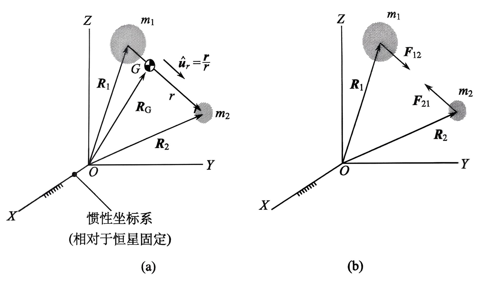
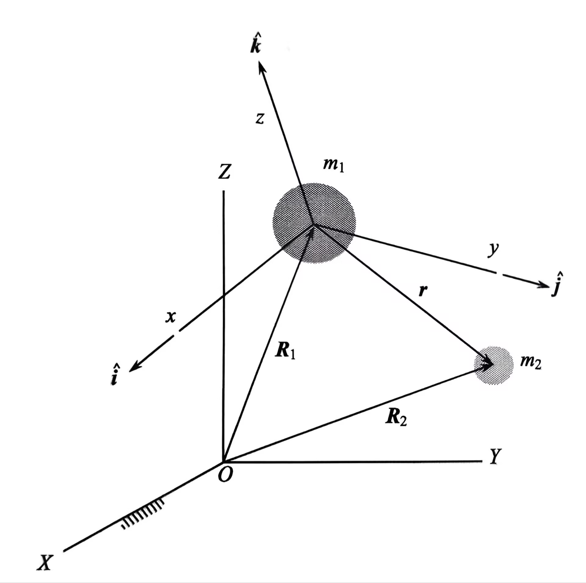
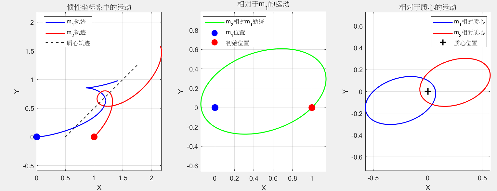

本节介绍的是空间中两个质点只受相互引力作用下的运动。
惯性系中的运动方程

定义二体问题的质心：
质心肯定在m1和m2的连线上：与共线。
质心的绝对速度：
质心的绝对加速度：
绝对 指的是相对于惯性坐标系测量的量。
设为相对于的位置矢量：
方向为指向。
设单位质量为：
作用在上的力为：
根据反作用力定律：
将上述两式相加得到
二体系统质心G的加速度为0，因此一个二体系统的质心可以作为一个惯性坐标系的原点。
相对运动方程
将前文中的力分别乘以质量：
将两式相减：
约去共同因子：
定义引力参数如下：
的单位是,后面使用的单位大都是，地球的引力参数.
那么加速度可以简化为：
这其实就是我们高中学的，就是考虑了质心和方向。
上面的公式是在质心处，惯性系下的，在固连于的非惯性系下：

由第一章的绝对加速度和相对加速度的关系可知：
只有 ， 时， 才成立。
在惯性坐标系下观察物体仅在引力作用下的运动：
%% 二体问题运动轨迹仿真
clear; close all; clc;
% 参数设置
G = 1; % 引力常数
m1 = 1; % 质量1
m2 = 1; % 质量2
% 初始条件
r1_0 = [0; 0]; % m1初始位置
r2_0 = [1; 0]; % m2初始位置
v1_0 = [0; 0]; % m1初始速度
v2_0 = [cos(pi/4); sin(pi/4)]; % m2初始速度（45°方向，大小1）
% 初始状态向量：[x1, y1, x2, y2, vx1, vy1, vx2, vy2]
y0 = [r1_0; r2_0; v1_0; v2_0];
% 计算轨道周期（根据相对运动能量）
mu = m1*m2/(m1+m2); % 约化质量
r0 = norm(r2_0 - r1_0); % 初始距离
v_rel = norm(v2_0 - v1_0); % 初始相对速度
E_rel = 0.5*mu*v_rel^2 - G*m1*m2/r0; % 相对运动能量
a = -G*m1*m2/(2*E_rel); % 半长轴
T = 2*pi*sqrt(a^3/(G*(m1+m2))); % 轨道周期
% 模拟时间：1.5个周期
tspan = [0, 1.5*T];
% 设置ODE求解器选项
options = odeset('RelTol', 1e-9, 'AbsTol', 1e-12);
% 求解运动方程
[t, Y] = ode45(@(t, y) odefunc(t, y, G, m1, m2), tspan, y0, options);
% 提取结果
x1 = Y(:,1);
y1 = Y(:,2);
x2 = Y(:,3);
y2 = Y(:,4);
% 计算相对位置（m2相对于m1）
rx = x2 - x1;
ry = y2 - y1;
% 计算质心位置
cm_x = (m1*x1 + m2*x2)/(m1 + m2);
cm_y = (m1*y1 + m2*y2)/(m1 + m2);
% 计算相对于质心的位置
r1_cm = [x1 - cm_x, y1 - cm_y];
r2_cm = [x2 - cm_x, y2 - cm_y];
%% 绘图
figure('Position', [100, 100, 1200, 400]);
% 图1：惯性坐标系中的轨迹（对应图2.3）
subplot(1, 3, 1);
plot(x1, y1, 'b-', 'LineWidth', 1.5); hold on;
plot(x2, y2, 'r-', 'LineWidth', 1.5);
plot(cm_x, cm_y, 'k--', 'LineWidth', 1);
plot(x1(1), y1(1), 'bo', 'MarkerSize', 10, 'MarkerFaceColor', 'b');
plot(x2(1), y2(1), 'ro', 'MarkerSize', 10, 'MarkerFaceColor', 'r');
xlabel('X'); ylabel('Y');
legend('m_1轨迹', 'm_2轨迹', '质心轨迹', 'Location', 'best');
title('惯性坐标系中的运动');
axis equal; grid on;
% 图2：相对于m1的运动轨迹（对应图2.4(a)）
subplot(1, 3, 2);
plot(rx, ry, 'g-', 'LineWidth', 1.5); hold on;
plot(0, 0, 'bo', 'MarkerSize', 10, 'MarkerFaceColor', 'b');
plot(rx(1), ry(1), 'ro', 'MarkerSize', 10, 'MarkerFaceColor', 'r');
xlabel('X'); ylabel('Y');
legend('m_2相对m_1轨迹', 'm_1位置', '初始位置', 'Location', 'best');
title('相对于m_1的运动');
axis equal; grid on;
% 图3：相对于质心的运动轨迹（对应图2.4(b)）
subplot(1, 3, 3);
plot(r1_cm(:,1), r1_cm(:,2), 'b-', 'LineWidth', 1.5); hold on;
plot(r2_cm(:,1), r2_cm(:,2), 'r-', 'LineWidth', 1.5);
plot(0, 0, 'k+', 'MarkerSize', 10, 'LineWidth', 2);
xlabel('X'); ylabel('Y');
legend('m_1相对质心', 'm_2相对质心', '质心位置', 'Location', 'best');
title('相对于质心的运动');
axis equal; grid on;
%% 运动方程函数
function dydt = odefunc(t, y, G, m1, m2)
% 状态变量
r1x = y(1); r1y = y(2);
r2x = y(3); r2y = y(4);
% 相对位置矢量
rx = r2x - r1x;
ry = r2y - r1y;
% 距离的三次方
r3 = (rx^2 + ry^2)^(3/2);
% 加速度
a1x = G * m2 * rx / r3;
a1y = G * m2 * ry / r3;
a2x = -G * m1 * rx / r3;
a2y = -G * m1 * ry / r3;
% 导数：位置导数等于速度，速度导数等于加速度
dydt = [y(5); y(6); % dr1/dt = v1
y(7); y(8); % dr2/dt = v2
a1x; a1y; % dv1/dt = a1
a2x; a2y]; % dv2/dt = a2
end得到的仿真图为：

由于质心加速度为0，可以视作惯性系，惯性系中绝对运动方程:
与有一定的关系，进行化简：
类似的对于同样的操作。
得到：